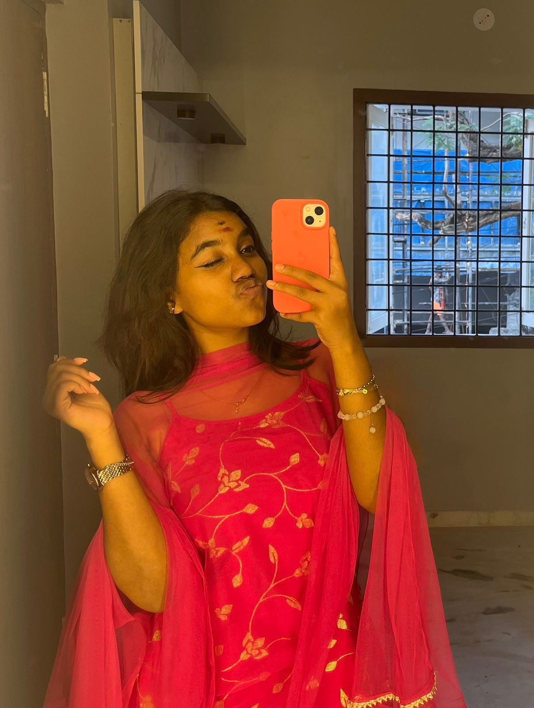

I am a B.Tech student specializing in Artificial Intelligence and Machine Learning at SRM University. Currently, I am expanding my skill set by learning MERN stack development under the guidance of Angela Yu.
I have hands-on experience in the professional world, having worked in a digital marketing company where I honed my skills in content creation and presentation design. I have successfully created presentations for several companies, showcasing my ability to deliver impactful and engaging content.
In addition to my academic and professional pursuits, I am an active participant in hackathons, which have allowed me to collaborate with teams, tackle real-world challenges, and innovate solutions under time constraints. My experiences reflect my passion for continuous learning and my dedication to growing as a professional in the tech field.
intermediate level
know to solve logical problems
have good experience in powerpoint presentation.
I have also done for my companies like "jp digigtal" and "mk developers"
intermediate level
know to create sites using html

i have a work experience of 2 years
I created a professional and visually appealing portfolio for JP Digital, a digital marketing agency. The portfolio was designed to showcase the company's services, expertise, and successful projects in a compelling manner. It included detailed sections highlighting JP Digital's core offerings, case studies of previous campaigns, and client testimonials, all structured to effectively communicate the agency's value proposition.
Using my skills in content creation and presentation design, I ensured the portfolio maintained a clean and modern aesthetic while being easy to navigate. My work aimed to leave a lasting impression on potential clients, emphasizing the agency's strengths and achievements. This project not only enhanced JP Digital's brand image but also demonstrated my ability to deliver high-quality deliverables tailored to client needs.

I created a comprehensive portfolio for MK Developers, showcasing their brand identity, core services, and completed projects. The portfolio was designed to highlight their expertise and professionalism in the development industry.
focused on presenting their projects in a visually appealing and organized manner, ensuring potential clients could easily understand their capabilities and achievements. The portfolio also included detailed insights into their unique selling points, client testimonials, and a clean, user-friendly layout to enhance engagement.
This project allowed me to apply my design and content creation skills effectively, ensuring the portfolio met the client’s expectations and served as a powerful tool for business growth.